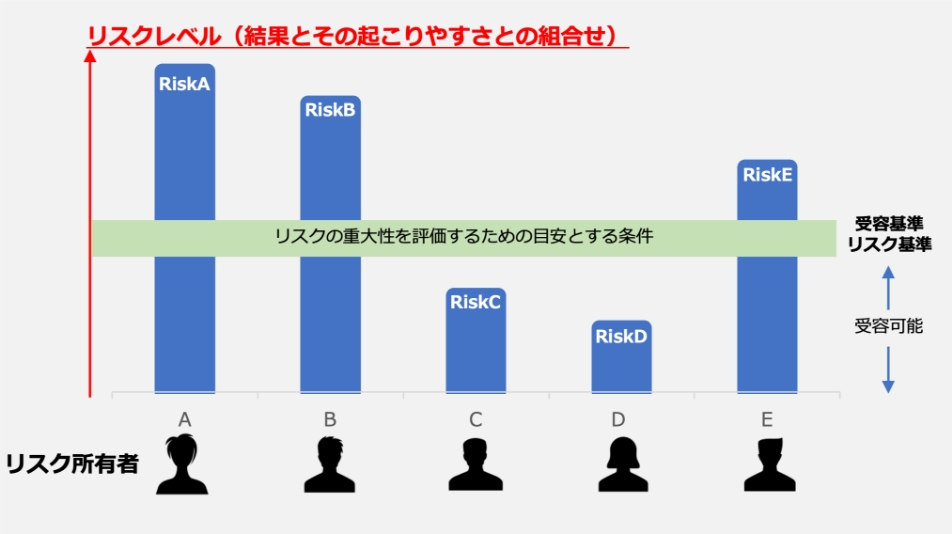
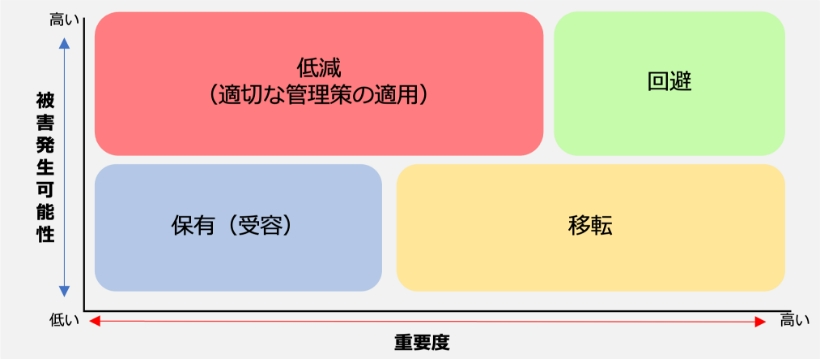

11-2-4. リスクの評価
リスク評価
リスク評価とは、「特定・評価したそれぞれのリスクが、受容可能かどうかを評価するプロセス」のことです。リスク分析で算出したリスクレベルを、リスク基準（リスク受容基準）と比較し、リスク対策が必要かどうか判断します。また、リスクレベルをもとに対策の優先順位をつけます。

図50. リスク評価の概要図
（出典）MSQA「ISMS推進マニュアル活用ガイドブック 2022年 1.0版」を基に作成
リスク評価（例）
「重要度」 × 「被害発生可能性」でリスクレベルを算出し、リスク評価を行います。例として、算出したリスクレベルを以下の表に当てはめて行います。
リスクレベル評価値
被害発生可能性
3
2
1
重要度
3
2
1
9
6
3
6
4
2
3
2
1
※リスクレベル = 「重要度」 × 「被害発生可能性」 ※赤色、黄色、青色の背景色は以下の「リスク受容基準」を示す
リスク受容基準（例）
リスクレベル
リスク評価
記述
低（青）
そのままで受容可能
それ以上の活動なしにリスクを受容可能
中（黄）
管理下で受容可能
リスクマネジメントの観点からフォローアップを実施し、中長期にわたる継続的改善の枠組みにおいて活動を設定することが望ましい
高（赤）
受容できない
リスクを低減するための対策を短期間で行うことが絶対に望ましい。そうでない場合、活動の全部又は一部を拒否することが望ましい
（出典）ISO/IEC「ISO/IEC 27005:2022」を基に作成
また、情報セキュリティリスクの場合、以下の図で示す考え方をすることが多いです。以下の図では、発生頻度が高く被害が非常に大きいものについては「回避」、発生頻度は低いが被害が大きいものについては「移転」、発生頻度は高いが被害が大きくないものについては「低減」を検討するという考え方を示しています。

図51. 情報セキュリティリスクの考え方
（出典）JNSA.”2-4 リスクアセスメントとリスク対応”. https://www.jnsa.org/ikusei/01/02-04.html,（参照 2023-09-21）